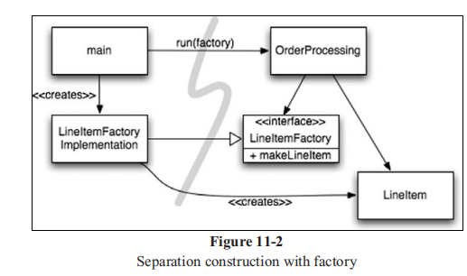

代码整洁之道
- 书籍：RobertC.Martin. 代码整洁之道[M]. 人民邮电出版社, 2010.
- 第14-16章分别对代码做了重构的示例，这里不做展示。
1. 整洁代码
什么是整洁代码：
- （C++语言发明者，Bjarne Stroustrup）优雅和高效：代码逻辑直接了当，叫缺陷难以隐藏；尽量减少依赖关系；依赖某种分层战略完善错误处理代码；性能调制最优，省的引诱别人做没规矩的优化，搞出一堆混乱来。整洁的代码只做好一件事。
- 代码永存：代码是最终用来表达需求的语言；
- 混乱的代码：断言烂程序总比什么没有强；
-
回头清理：稍后等于永不（Later equals never）
-
混乱的代价：快速研发->效率低下->重新设计->快速研发，陷入循环；
- 花时间保持代码整洁不但有关效率，还有关生存；
-
制造混乱无助于赶上期限，唯一的做法是始终尽可能保持代码整洁。
-
专业态度：项目经理从我们这里得到信息，才能作出承诺和保证；
- 程序员遵从不了解混乱风险的经理的意愿，也是不专业的做法。
-
经验与教训：病人请求医生做手术前别洗手，那样会花太多时间1；
-
代码感：从混乱中看出其他的可能与变化，贯彻技巧习得的“整洁感”；
-
能分辨整洁代码和肮脏代码段，也不意味这会写整洁代码（示例：绘画）。
-
读写比例：读写花费时间的比例超过10:1。写新代码时，一直在读旧代码；
-
编辑器回放：记录每次击键动作，多数时间都在滚动屏幕和浏览其他模块。
-
童子军军规：让营地比你来时更干净；
2. 有意义的命名
- 名副其实：体现本意的名称，不应该用注释来阐述变量的意义；
- 避免误导：名称包含的类型（如List）跟实际不一致，提放使用不同之处较小的名称（如只有中间个别字符的变化）；
- 做有意义的区分：错误示例如
Product、ProductInfo、ProductData； - 可读性强：
genymddhms（生成日期） =>generationTimeStamp； - 可搜索性强：长名称胜于短名称(标志性，不重复)，名称长短应与作用域大小相对应。
- 避免使用编码：不要把类型和作用域编进名称里面
-
不要类型编码（强类型语言），无需
m_成员前缀（更好的IDE）··· -
类名：名词或者名词短语，避免
Manager, Processor, Data, Info这样的类名 - 方法名：动词或者动词短语，JavaBean规范（
get,set）； -
重载构造器时，提供描述参数的静态工厂方法名（同时构造函数私有化）。
-
一以贯之：每个抽象概念对应一个词，同名词保持使用同一个
-
如
fetch, get, retrieve，controller,manager,driver -
解决方案领域名称优先：尽管使用CS术语、算法、模式名，只有程序员才会阅读代码
-
其次，才是使用问题领域的名称，至少维护者可以问领域专家。
-
合适的语境：良好命名的类、函数或名空间来放置名称，提供语境，最差是提供语境前缀。
- 添加语境：多个变量相关联，可以放到一个类中（组成关系）
- 无用语境：对类使用包的前缀，如给每个类中添加GSD前缀
3. 函数
如何写出这样的函数：没有人能够一开始就按照规则写函数
- 先写：冗长而复杂，不满足要求；
- 测试：配上一套单元测试，覆盖每行丑陋的代码；
- 打磨：分解函数、修改名称、消除重复，保证测试通过。
- 短小：函数的缩进不该多于一层或者两层。
- 只做一件事：函数中的代码应该处于同一抽象层上，每个函数一个抽象层级
- 可以使用 TO 起头段落来描述函数，自顶向下的 TO起头段落
- Switch语句：确保switch埋藏在较低的抽象层级，并永不重复。
- 利用多态实现：switch 语句埋在抽象工厂底下。
- 函数参数：参数尽量可能少，尽量避免输出参数
- 不要传入标识参数：函数不止干一件事
- 三个以上参数时，需要将部分参数（有所关联）封装成类
- 可变参数等价于类型为 List 的单个参数；
- 无副作用：函数尽量无副作用，否则函数名应该标识具备副作用
- 分隔指令与询问：函数应该修改某对象的状态或者返回该对象的有关信息
- 并发程序，需要保证
check-then-set原子性，可以违反该原则 - 异常替代返回码：错误处理代码，能从主路径代码中分离出来
- 抽离
Try-Catch代码块：错误处理就是一件事，单独的函数处理 - 开闭原则：新的异常可以派生出来，无需重新编译或者重新部署
4. 注释
别给糟糕的代码加注释——重新写吧。 ——Brian W.Kernighan 与 P.J.Plaugher
- 注释不能美化糟糕的代码：重构代码，提供可解释的名称而不是注释；
- 必要的注释：
- 法律信息（如开源协议），正则的解释和示例，无法修改的代码（如三方库）
- 对意图的解释：某个决定后面的意图（阐述为什么要做这么做）
- 警示：防止别人误用或者优化（如线程安全要求
SimpleDataFormat非静态） - TODO注释：合理使用，定期查看，删除不再需要的
- 公共API的 Javadoc：要保持跟代码的一致性
- 坏注释：大多数注释都属于此类，是糟糕的代码的支撑或接口。
- 多余的注释：不能提供比代码本身更多的信息（如只是对名称的叙述）。
- 日志式注释：使用源码管理系统（包括作者、注释掉的代码等）。
- 非本地信息：别在本地注释的上下文环境给出系统级的信息（同步困难）。
- 废弃的注释：包括注释的代码；
5. 格式
- 垂直尺寸：用大多数200行，最长500行的单个文件，构建出色的系统；
- 空白行：对不同的逻辑区块进行分离；
- 关系密切的概念应该互相靠近；
- 自上而下展示函数调用依赖顺序；
- 横向格式：一般不超过80字符，上限为 120 字符；
- 团队规则：定义统一的规范，并通过 IDE/编译脚本等强制执行。
6. 对象和数据结构
- 对象暴露行为，隐藏数据；
添加新的对象类型时，无需修改既有行为；但难以在既有对象中添加新行为；
数据结构暴露数据，没有明显的行为；
- 便于向既有数据结构添加新行为，但难以向既有函数添加新的数据结构；
- 隐藏实现关乎抽象：隐藏实现并非只是在变量之间放上一个函数层那么简单；
- 暴露抽象接口，以便用户无需了解数据结构的实现就能操作数据本体；
- 以抽象形态表述数据，而不是用接口和/或赋值器、取值器就万事大吉。
- 数据、对象的反对称性：过程式代码难以添加新的数据结构（必须修改所有函数），面向对象代码难以添加新函数（必须修改所有类）。
- Demeter 律：模块不应了解它所操作对象的内部情形，避免过多的链式调用，尽量减少模块之间的依赖关系
- 类 C 的方法
f之应该调用以下对象的方法（不应该嗲用由任何函数返回的对象的方法）：C、C的成员对象、f创建的对象、f的参数对象
- 对象应该隐藏其内部结构（getter/setter），暴露行为（要做什么事）；
- 数据传输对象：DTO（Data Transfer Object），即
bean结构，只拥有数据，没有行为。 - 不要创建数据结构和对象的混合体。
7. 错误处理
- 使用异常而不是返回码：将异常处理逻辑，与业务逻辑分离；
- 先写Try-Catch-Finally语句：测试驱动，满足测试要求；
- 使用不可控异常：可控异常违反开闭原则，在中间的每个方法都要声明该异常；
- 给出异常发生的环境说明：创建信息充分的错误消息，包括失败的操作和失败类型等；
- 自定义异常类：如对第三方API进行打包，捕获异常并返回自定义异常，避免耦合；
- 定义常规流程：特例模式，用于异常时需要处理特殊情况；
- 创建类或配置对象来处理特例，调用者不需要应付异常行为。
- 别返回NULL值：抛出异常，或者返回特例对象（如空集合）
- 别传递NULL值：避免空指针处理，能够明确参数列表传递 NULL 值意味着出问题；
8. 边界
边界上的代码清晰的分割和定义了期望的测试，并且可以切换第三方的实现。
- 使用第三方代码：
- 不要将
Map（或在边界上的其他接口）在系统中传递，将其保留在类中。 - 学习性测试：通过测试用例，理解第三方代码库的用法，保证其兼容性
- 使用尚不存在的代码：还未开发完成的未知边界
- 假定接口形式，以及使用适配器适配最终的边界接口；
9. 单元测试
测试代码和生产代码一样重要，单元测试使得代码可扩展、可维护和可复用。
- TDD三定律：
- 定律一：在编写不能通过的单元测试前，不可编写生产代码；
- 定律二：只可编写刚好无法通过的单元测试，不能编译也算不通过；
- 定律三：只可编写刚好足以通过当前失败测试的生产代码；
- 保持测试整洁：测试代码必须随着生产代码的演进而修改
- 测试代码越脏，越难以修改，导致移除测试代码，最终生产代码不稳定；
- 整洁的测试代码：可读性要强（细节要少）
- 呈现构造-操作-检验（BUILD-OPERATE-CHECK）模式
- 每个测试一个概念：尽可能减少每个概念的断言数量，每个测试函数只测试一个概念。
- F.I.R.S.T：测试遵循的规则
- Fast：运行要快
- Independent：互相独立
- Repeatable：可重复运行
- Self-Validating：布尔值输出
- Timely（及时）：及时编写，在写生产代码前编写，保证可测试。
10. 类
- 类的组织：静态变量、变量、静态函数、公共函数、私有函数
- 测试所使用：可以使用包私有变量，或者 protected；
- 类应该短小：类的名称应该描述其权责
- 如果无法为某个类命以精确的名称，则这个类大概就太长；
- 如果类名中包括含义模糊的词，如 Processor或Manager或Super，则存在权责聚集的情况。
- 单一职责原则：类应该且有一个加以修改的原因
- 归置工具示例：许多抽屉且每个抽屉具有良好的定义和标记，而不是少数几个随便把所有东西扔进去的抽屉。
- 内聚：保持内聚会得到许多短小的类；
- 将大函数拆为小函数，往往也是将类拆分为许多小类的时机；
- 为了修改而组织：对类加以组织，降低修改的风险
- 出现只与类的一小部分有关的私有方法行为，意味着存在改进空间；
- 依赖倒置原则：类应该依赖于抽象接口而不是具体细节，降低细节改动的影响。
- 不掩蔽时序耦合：针对有调用顺序依赖的函数，通过第一个函数的返回参数是第二个函数的输入参数，强调时序性的耦合，变得可见。
11. 系统
无论是设计系统或单独的模块，别忘了使用大概可工作的最简单的方案。
-
将系统的构造和使用分开： 将启始过程和启始过程后的运行时逻辑分开；
-
分解main：将全部构造搬迁到 main 或者被称之为 main 的模块中；
- 工厂：应用程序负责确定何时创建对象，使用工厂类；

-
依赖注入：控制反转，分离构造与使用。
-
面向方面编程：切分关注面，容易扩容（Scaling Up）
-
Java 代理：JDK的动态代理只能代理接口，字节码操作如CGLIB、ASM等可以代理类；
-
纯 Java AOP 框架：Spring AOP， Google Guice；
-
AspectJ 的功能更强大；
-
测试驱动系统架构：模块化和关注面的切分。在巨大的系统中，没人能做所有决策。
12. 迭进
测试消除了对清理代码就会破坏代码的恐惧。
- 通过迭进设计达到整洁目的：Kent Back 关于简单设计的四条规则
- 运行所有测试：紧耦合的代码难以编写测试。编写测试引致更好的设计；
- 不可重复：模板方法模式等可以用于移除重复代码；
- 表达程序员的意图：代码应清晰表达作者的意图（好的命名，短小的类和尺寸）；
- 尽可能减少类和方法的数量：避免太多的细小类和方法，较以上三点优先级最低。
13. 并发编程
- 并发防御原则：
- 单一权责原则：并发设计自身足够复杂到成为修改的理由，分离并发相关代码与其他代码；
- 限制数据作用域：严格限制对可能被共享的数据的访问；
- 使用数据副本：复制对象以只读的方法使用，线程同步开销可以补偿创建对象的开销；
- 线程尽可能独立：尝试将数据分解到可被独立线程操作的独立子集；
- 警惕同步方法之间的依赖：避免使用一个共享对象的多个方法，如
getThenSet, checkThenSet； - 基于客户端的锁定：调用多个方法前，先对服务端加锁；
- 基于服务端的锁定：服务端内创建锁定服务端的方法，调用所有方法，然后释放锁；
- 适配服务端：创建执行锁定的中间层，不修改原始服务端的代码。
- 保持同步区微小：尽可能减小同步区域，避免资源争用和提升执行效率；
- 编写正确的关闭代码：编写一段时间后平静地关闭的系统，尽早考虑关闭问题，尽早令其工作正常。
- 测试线程代码：编写有潜力暴露问题的测试
- 不要将系统错误归咎于偶发事件；
- 先使非线程代码可工作：不要同时追踪非线程缺陷和线程缺陷；
- 编写可插拔的现成代码：可以在不同的配置环境下运行；
- 编写可调整的线程代码：允许线程数量可调整；
- 运行多于处理器数据量的线程：任务交换越频繁，越有可能使得错误代码出错；
- 装置试错代码：添加线程调度等代码，改变执行顺序，增加出错几率
- 硬编码：手动加入
wait()、sleep()、yield()、priority()等调用； - 自动化：C++ 可以使用宏定义，对方法每条语句定义宏，测试时开启并编译该宏定义；
- 硬编码：手动加入
17. 味道与启发
-
1847年当伊格纳兹·塞麦尔维斯（Ignaz Semmelweis）提出医生应洗手的建议时，遭到了反对，人们认为医生太忙，接诊时无暇洗手。 ↩